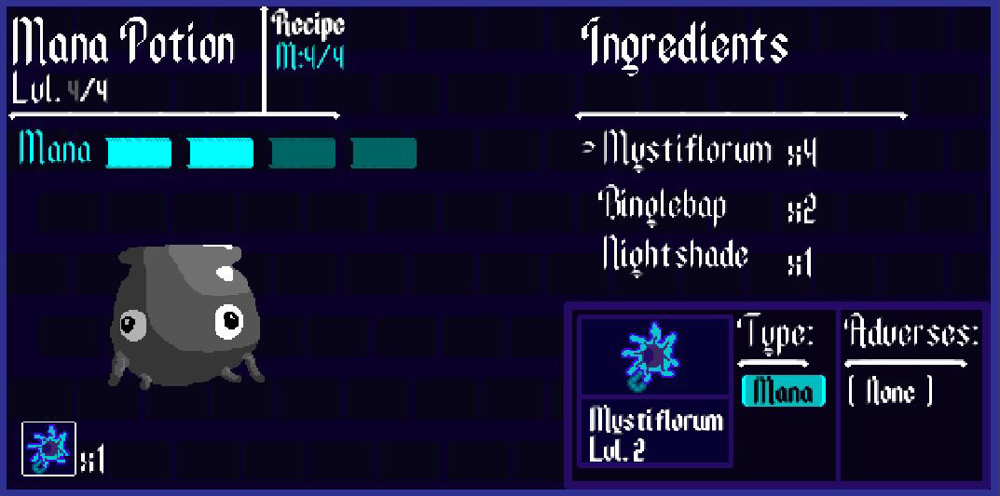
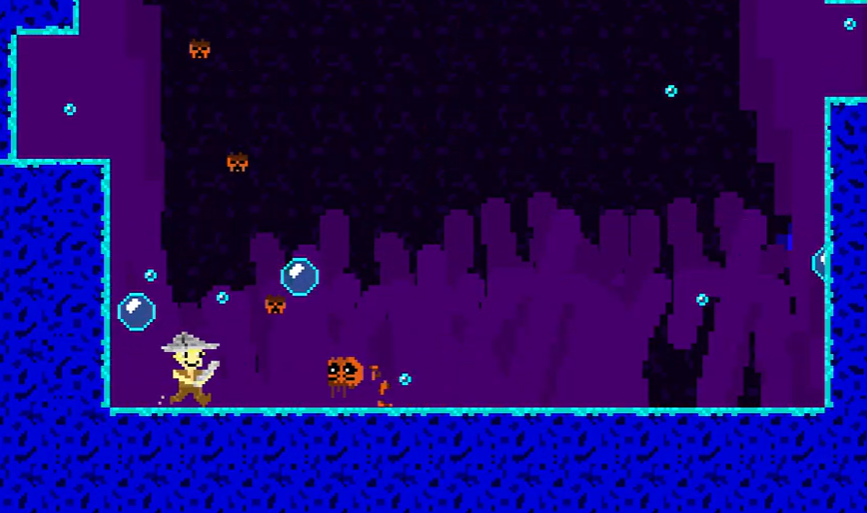
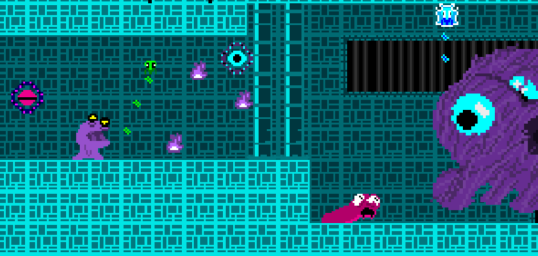

Audio to read aloud all game descriptions
Our Games
Alchemist's Apprentice
A cozy potion making puzzle game where you play as an alchemist's apprentice, studying the many elements of the world around you. With hundreds of ingredients, each with their own elemental levels to be combined into making the perfect potions.
How To Be A Hero
In this short and sweet puzzle platformer, you play as the many different enemies throughout the land, assisting the young hero into navigating various challenges and obstacles; teaching the young one how to be the best hero he could be.
Dungeon Party
In theory, this may be the easiest game to win. With the magic to negate all damage dealt to you and reviving your at any point—you are granted the tools to power through each dungeon at complete vigor.
However, with the speed, skill, and power of each enemy—all they may need to land is one or two blows to put an end to your party.
With determined minds, you and your goblin companions must stay attentive and maneuver through each dungeon with the knowledge of how each enemy may end your journey.